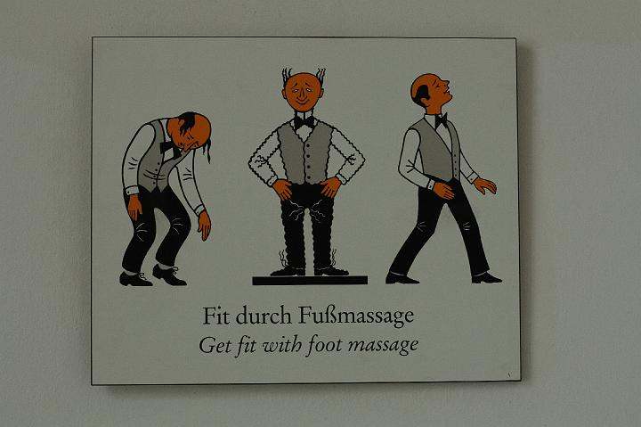

|
|  |
| ExkursionSS2008 021 |
| Bild | 1 | 2 | 3 | 4 | 5 | 6 | 7 | 8 | 9 | 10 | 11 | 12 | 13 | 14 | 15 | 16 | 17 | 18 | 19 | 20 | > | » |
| KAMERA: Canon EOS 400D DIGITAL | DATUM: 06.06.08 10:47 | ISO-EINSTELLUNG: 400 | BELICHTUNGSDAUER: 1/100s | ÖFFNUNG: 4.5 | BRENNWEITE: 50.0mm (=81mm) |
| Anzahl Bilder: 87 | Letzte Aktualisierung: 09.06.08 16:15 | Erzeugt von JAlbum 7.3 & Chameleon | Hilfe |